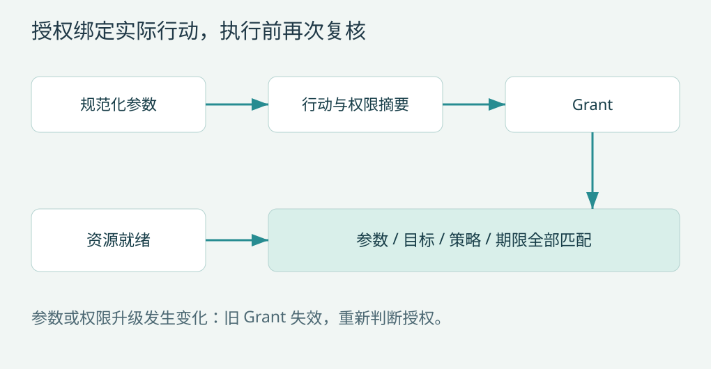

第 11 章 授权与审批：批准的必须是将要执行的行动
Codex：审批、执行尝试与升级重试的实际顺序
本节是固定源码快照的实际流程；后续 Invocation、Grant 和统一指纹是本书建议接口，不能反过来当作四个项目已经共有的 schema。
ToolOrchestrator::run() 先从请求取得 TurnEnvironment、permission profile 与审批策略，再计算 ExecApprovalRequirement。Forbidden 直接拒绝，NeedsApproval 进入审批；Skip 通常由配置决策放行，但 strict_auto_review 启用时仍进入审查。随后才确定沙箱覆盖、实际权限与初次执行尝试。审批通过并不意味着必然绕过沙箱。C05
请求与执行环境
→ 审批要求：Skip / Forbidden / NeedsApproval
→ 必要审批
→ 选择实际权限和沙箱
→ 首次执行
→ 若确认为沙箱拒绝，检查升级条件
→ 必要时按重试的实际权限审查，再执行第一次失败后，代码先识别 SandboxErr::Denied，普通业务失败不会直接进入该升级分支；再检查网络拒绝信息、工具 escalate_on_failure、审批策略及能否无沙箱运行。Never 和 OnRequest 等策略有明确的不重试分支，也存在受条件约束的网络审批例外，不能概括成“命令失败就申请更高权限”。C05
准备新的升级审查时，允许无沙箱重试的 ExecCommand 行动会被改为 RequireEscalated，清除原来的 additional_permissions，以便审查和缓存针对实际重试权限。已有用户或 hook 批准与 Guardian 自动审查的复用条件不同；不是每次升级都必然重新弹窗。设计判断：关键是实际行动和已审查权限一致，而非统计是否显示过确认框。C05
DeepSeek：可扩展决策之后仍有单调 guard
prepareExecution() 先运行 tools/pre-execute waterfall，ask 由 serviceAsk 处理；allow 后再检查全局及 scope 链上的 guard。guard 返回拒绝原因或 undefined，没有强制 allow 返回值，所以普通扩展放行仍可能被 guard 拒绝，其他 guard 不能反向放宽。取消在多个执行边界另行检查。D05
这里的单调性描述受支持的策略接口，不表示同进程插件天然隔离：能执行任意宿主代码的恶意插件不受普通 hook API 的安全承诺保护。其执行权限与信任范围应由第 12、19 章的隔离与扩展设计约束。
Claude Code：输入变化和规则优先级属于执行语义
checkPermissionsAndCallTool() 先解析 schema、调用 validateInput，再运行 PreToolUse hooks 和权限流程。passthrough hook 可以给出 updatedInput，供正常权限流程使用；权限结果也可以提供 updatedInput，成为随后 tool.call 的输入。原模型输入与最终执行输入因此不能假定永远相同。A06
checkRuleBasedPermissions() 明确列出 bypassPermissions 仍尊重的规则检查，包括整工具 deny、工具特定 deny、部分 ask 规则和 safetyCheck。它同时处理沙箱 Bash 的条件性自动放行，不能简单归纳为任一 ask 永远优先。dontAsk 的处理也可将尚未解决的 ask 转为 deny，避免没有交互入口时隐式同意。A11
设计判断：应能解释本次决策来自规则、模式、hook、用户还是分类器，以及最终批准的参数。这里不能仅凭 updatedInput 的存在推断漏洞，也不能声称该实现已采用后文建议的统一摘要授权。审阅具体工具时，需要继续核对修改后的输入如何受规则和执行环境约束。
Pi：项目 trust 与单次工具批准分开理解
resolveProjectTrusted() 处理项目配置、资源、缺失项目包安装和项目扩展执行的信任选择。它依次考虑显式 override、项目资源、扩展决策、已存信任与默认策略；需要询问但没有 UI 时返回 false，取消选择也不自动信任。P09
工具调用的 beforeToolCall 可以阻止某次行动，但项目 trust 不等于逐命令批准，更不等于操作系统沙箱。设计判断：项目代码能影响宿主扩展装载时，应在加载边界建立信任；工具真正执行时仍需独立执行策略。这两个问题不能用同一个 approved 字段混在一起。
将提议、决策和执行凭证分开
Invocation 是模型提议经过规范化后的行动；Decision 是 allow、deny 或 ask；Grant 是准许执行的凭证。不要用一个可随意设置的 approved 布尔字段表示全部过程。
Invocation = {call_id, tool_version, normalized_args,
workspace_id, execution_target, requested_authority}
Grant = {invocation_digest, authority_digest, policy_revision,
principal, expires_at, uses_remaining, decision_id}用户界面显示可理解摘要，授权绑定完整 canonical digest。摘要中隐藏敏感值不应让两个不同动作被错误视为同一授权。

指纹里必须覆盖哪些变化
工具版本决定参数解释；参数决定动作；工作目录和执行目标决定动作发生在哪里；权限范围决定能触及什么；策略版本决定批准所依据的规则。以上任意一项变化，都需要重新判断授权是否仍有效。
canonical JSON 应使用确定键顺序、明确数值表示、拒绝 NaN，并区分缺失、null 和默认值。参数默认值应先展开再计算摘要，否则一个默认工作目录变化会在指纹不变时改变实际行为。指纹是完整性标识，跨不可信进程传递时还需认证或签名，单纯哈希不是授权证明。
ask 是持久暂停状态
生成 ApprovalRequest 并提交，然后通知 UI；UI 用 decision_id 回复。服务检查当前请求仍 pending、审批对象未变化、决策者有权同意，再生成 grant。重复答复幂等处理，过期答复返回 stale，而不是批准后来同位置的新调用。
用户关闭窗口不等于同意。等待超时应保持阻塞或拒绝，不能默认 allow。暂停期间其他会话继续运行，但当前调用没有执行权限。CLI、IDE 和 Web 应共享这条语义。
审批后为什么还要再检查
队列可能等待锁很久。真正执行前重新检查 grant 的有效期、政策版本、执行目标和输入摘要，文件工具还检查内容版本。先锁后询问会长时间占用资源；先询问后锁则需要执行前复核。推荐后一种，再明确哪些前置条件变化应让用户重新确认。
审批期间收到 steering 取消旧计划，应撤销待决请求；未来 UI 回复不能唤醒旧工具。回合终结时关闭其所有 pending approvals。
权限升级是一项新行动
受限执行失败后，不能自动把旧 grant 用到宿主或更宽网络范围。Codex 的工具编排区分执行尝试与升级权限后的审查，可作为参考。C05
例如原请求只允许工作区写入，重试要读取家目录配置，则 authority_digest 变化；即使 command 字符串相同，也不属于同一授权。网络目的地新增、远程账户变化和工作目录变化同理。
规则组合与 mandatory guard
建议组合规则遵守：强制拒绝优先，普通插件可收紧，用户决定只能在系统允许范围内放行。allowlist 应绑定范围，而不是把“允许一次 git”泛化成所有 git 子命令。一个 shell 解析器也不能替代真实资源限制。
嵌套工具每次都检查。外层 code mode 已批准，不表示代码里调用的上传、编辑和发布工具都获批。DeepSeek 的 guard 和 Pi 共享 runToolCall 路径提供了把限制放在真实执行点的参考。D05P01
缓存授权要有明确等价关系
可以缓存“此会话允许读取这个工作区”，但不能缓存“用户上次点过允许，所以以后都可以”。每个缓存规则写明动作集合、资源集合、权限上限、身份、过期方式和撤销路径。规则匹配结果应能解释，而不是只记录 allow。
验收场景
批准后修改一个参数、升级权限、改变 cwd、延迟到 grant 过期、重复回复、使用另一调用的 decision_id、同名工具升级版本、子代理请求更宽权限，都应得到明确处理。参考内核实现参数与 workspace/tool/policy 版本绑定及有效期检查；交互式持久审批队列属于本章方案，不冒充已经完整实现。